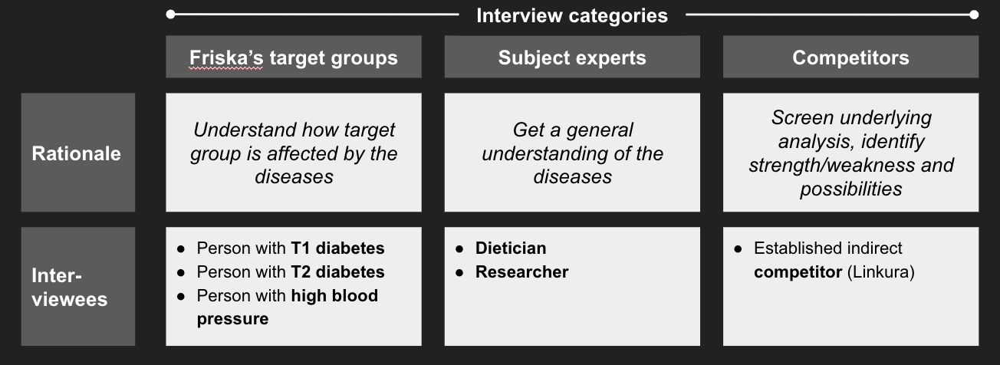
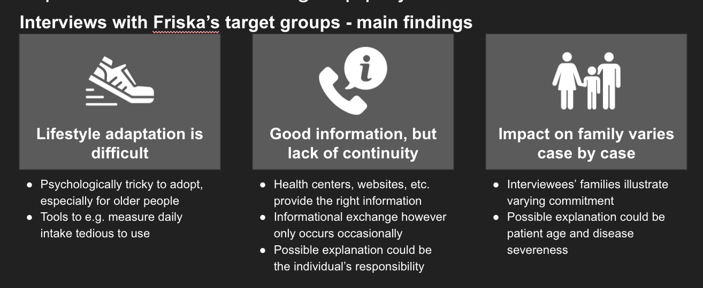

Friska is a start-up focused on bridging the gap between metabolic diseases and digitalization. Their solution aims at significantly increase its users well being and empowering them with the tools needed for self-help. By enabling continuous measurements, first-class presentation and ease of use, Friska wants to bring knowledge and real time insight into the very specific metabolic processes happening in the body. By integrating intelligent technology as well as human coaching and guiding, Friska strives to offer a digital app suitable for tomorrow's healthcare system.
This project was carried out to investigate two main themes, one being how to commercially deploy such a value offering and second how to design the interface and identify desired functionality towards clients of the Friska app.
The main problem statement can be formalized as:
“How should Friska be positioned in the commercial ecosystem of the Swedish healthcare system?”
“How could a first iteration end-user interface look like and what functions should be included?”
In the pre-study phase we conducted contextual inquiries in the form of interviews, some of the interviews were done over the phone and others were done face-to-face The interviewees and the purpose of interviewing them is presented below:
The main findings from the contextual inquiry phase:
Focus group meeting
Splitting into two work-streams; Business and Tech, show competence matrix? Present goals of each workstream